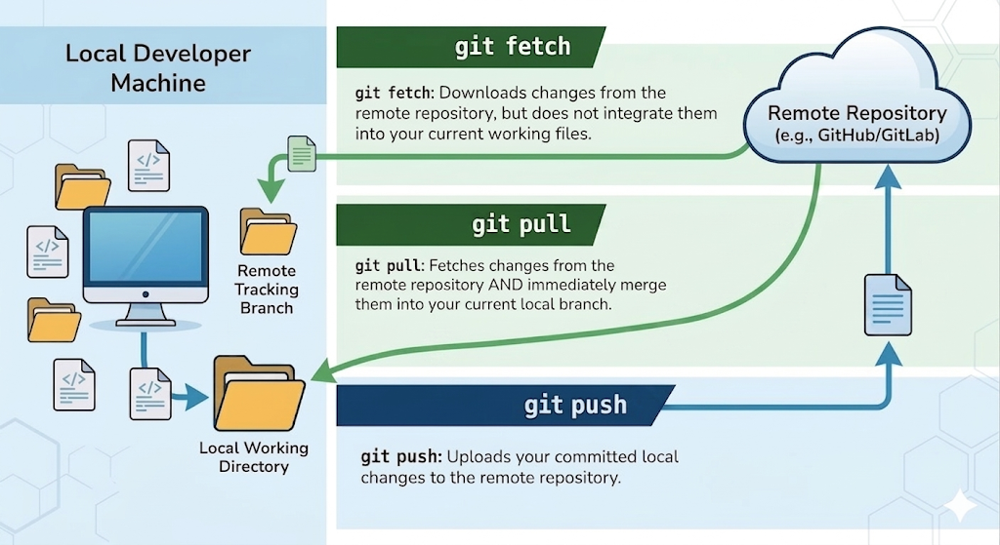
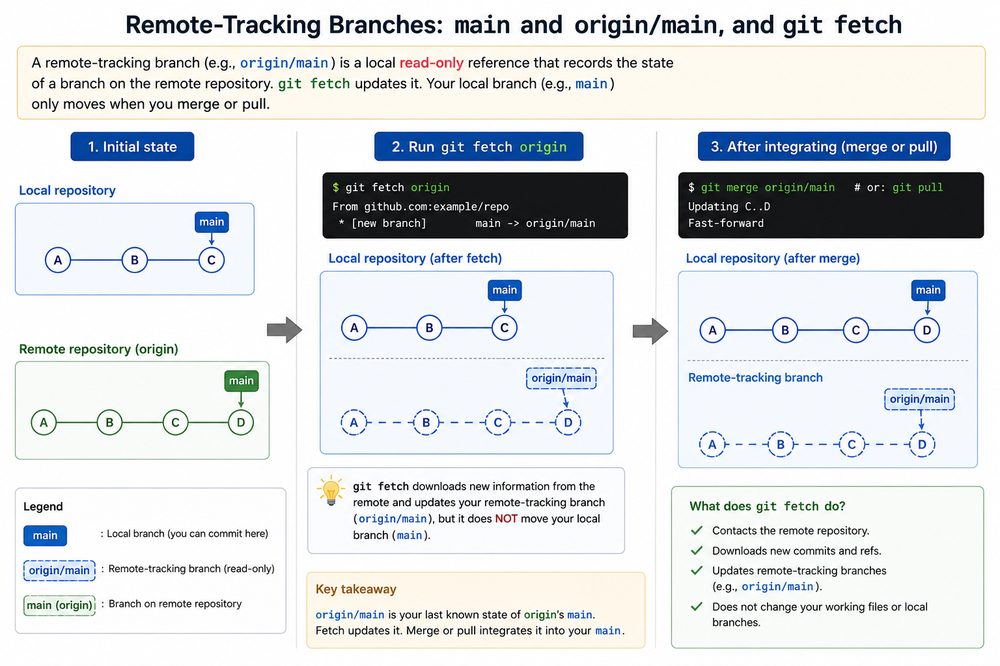

In Week 4, Git was introduced mainly as a local version control system: you created a repository, staged changes, committed snapshots, and read history on your own machine. In collaborative work, Git also needs a way to connect your local repository to other copies of the same project. That is where remotes come in.
A remote is a named reference to another repository, usually hosted on a
shared server or platform. The command
git remote add <name> <url> records that
relationship locally, so that later commands can refer to that other
repository by a short name instead of a full URL. By convention, the
remote you get automatically when you clone a repository is named
origin, which is why origin shows up in almost
every example, including this unit's.
That name should look familiar. In Week 4 you cloned a repository and
git status answered "Your branch is up to date with
'origin/main'", while git log showed
(HEAD -> main, origin/main). Two names appeared for what
looked like one branch, and only main was explained at the
time. origin/main is the other half of that picture, and it
has a specific meaning.
Remote-tracking branches, such as
origin/main, are local references recording what Git last
saw on the remote repository. They are not editable working branches —
they are your local record of remote branch positions. So when a freshly
cloned repository claims your branch is "up to date with
origin/main", it is not contacting the server to check.
It is comparing your main against its own stored note of
where origin's main stood the last time the
two actually spoke — which, immediately after a clone, was a moment ago.
Now that the remote and its remote-tracking branches have names, the question is how data actually moves between the two repositories. Three commands do that work, and the differences between them are worth being precise about, because they change different things.
| Command | What it does |
|---|---|
git fetch |
Updates your remote-tracking information only — does not touch your working branch. |
git pull |
Runs git fetch, then integrates the chosen remote
branch into your current branch — by merging it, which is the
behaviour you get by default. (Section 5.4 introduces a second
way of integrating, which pull can also be asked to
use.)
|
git push |
Uploads your local branch to the remote, e.g.
git push origin main pushes local main to origin's
main.
|

The same three commands, side by side — a quick reference for which one changes what:
| Command | Direction | What it does | Working files? | Your branch? | Remote? |
|---|---|---|---|---|---|
git fetch |
Remote → you | Downloads new commits and updates your remote-tracking branches. | No | No | No |
git pull |
Remote → you | Fetches, then integrates the new commits into your current branch. | Yes | Yes | No |
git push |
You → remote | Uploads your local commits to the remote. | No | No | Yes |
git pull only changes your files and branch when the remote
actually has new commits; if there is nothing to fetch, it does nothing.
Note also that git push leaves your working files and your
local branch untouched — it sends commits you have already made.
Keeping these two apart is one of the most important mental models in
collaborative Git, and git fetch is the command that shows
why: it moves only one of them. When you run git fetch, Git
contacts the remote repository, downloads any new objects and
references, and updates your remote-tracking branches — and then stops.
Your own main stays exactly where it was, and so do the
files in your working tree. Nothing you have written can be overwritten
by a fetch, which is precisely what makes it the cautious way to find
out what has changed before deciding what to do about it.

A local branch can be configured to track a remote
branch, meaning Git records which remote and which branch should be
treated as the default partner for operations such as
git pull. That default partner is called the branch's
upstream. The --track option sets an
upstream explicitly, and clone operations usually configure the initial
local branch to track the default branch from the repository that was
cloned. This is why a freshly cloned repository often lets you type
git pull or git push without repeatedly
spelling out the remote and branch names. A branch you created yourself
has no upstream until you give it one, which is what the
-u in git push -u origin <branch> does on
that branch's first push.
Rather than guessing which remotes exist or which branch tracks what,
ask Git directly. git remote -v lists every remote with its
fetch and push URLs, and git branch -vv lists your local
branches together with their upstream and how far ahead or behind each
one currently is:
$ git remote -v
origin https://github.com/ada/parser.git (fetch)
origin https://github.com/ada/parser.git (push)
$ git branch -vv
* feature-parser 3f8a2c1 [origin/feature-parser: ahead 2] Add token scanner
main 9d4e7b0 [origin/main] Add unit tests for parser
Here feature-parser tracks
origin/feature-parser and has two commits that have not been
pushed yet, while main is level with
origin/main. One caution: "ahead 2" is measured against your
remote-tracking branch, which is only as current as your last
fetch. If a teammate has pushed since then, Git cannot know until you run
git fetch — which is exactly why fetching before you judge
the state of a shared branch is a good habit.
FIT2109 · Week 5 · Monash University · by Dr. Zahra Mirzamomen